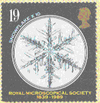
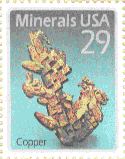

Crystallographic Philately
I have been inspired by the issue of the stamp showing Dorothy Hodgkin the
first Vice President of the BCA, to set up news of crystallography on stamps.
Please send news of any others showing crystals, crystal
structures or crystallographers to add to this list to the BCA
Home page WebMaster BCA@ISISE.RL.AC.UK
Page last updated 13 Oct 99
News of UK Millenium stamps 25 Feb 99
Although the BCA failed to get a set of UK stamps commemorating the IUCr99
Congress due to the UK Post Office stamps being in monthly themes this
year, the stamps for August are to depict scientists, including the
discovery of the double helix, so we shall have a little crystallography on
the August stamps for postcards sent from IUCr99.
Useful Web sites are:
Periodicals which publish occasional news of minerals stamps are:
- The Mineralogical Record which has a regular section associated
with their 'Letters to the editor'
- Geology Today most recently, 'Minerals on stamps',
Paul W.J.Glover, p 223 - 228 issue of Nov/Dec 96
- LAPIS most recently, 'Die volle Briefmarkenpracht aus Niger'
p 7 in issue of March 97
- European Spectroscopic News had a 'Philately Corner' between
1976 and 1983 edited by Fred Armitage and Gunter Heyden.
Click here for the BCA catalogue by Country, or
structure or people
Stamps in 'Crystallography News'
- Sep 99 Issue 70 p8
-
The UK Post
Office issued a 4 stamps of 'Scientists Tales' on 3 August 1999 the 19p value stamp commemmorated the Discovery of the Double Helical Structure of DNA
- Sep 96 Issue 58 p18
-
The UK Post
Office issued a 20p value stamp on 6 August 1996 showing a portrait of
Dorothy Hodgkin and part of a model of Vitamin B12.
One of a series of 4 Twentieth Century Women of Acheivment
-
 NaCl structure issued by the UK in 1977 in a series to
commommorate 100 years of the Royal Society of Chemistry and the award
of the Nobel prize to the Braggs in 1915
NaCl structure issued by the UK in 1977 in a series to
commommorate 100 years of the Royal Society of Chemistry and the award
of the Nobel prize to the Braggs in 1915
-
a snowflake from the series
issued
in 1988 by the UK commemmorating
150 years of the Royal Microscopical Society
- 
USA 29c one of a set of four showing minerals
- Dec 96 Issue 59 p31 Draw for the plate block of Dorothy
Hodgkin stamps held at the IUCr in Seattle August 1996
- British Antarctic Territory 1986 50th anniversary of International
Glaciological Society 4 values, snow crystals, 10, 24, 29, 50p
- Canada 1980 35c uranimite structure, 1992 set of 5 commemorating the
150th anniversary of the Geological Survey
- China 1979 8f DNA spiral
- France 1986 4 minerals, 2f marcasite, 3f quartz, 4f calcite, 5f fluorite
- French Antarctica 8 issued between 1989 and 1996
- Japan 1991 62y International Conference on Materials and mechanisms of superconductivity, Kanazawa
- Spain 1969 1.5p 6th European Biochemical Congress
- Switzerland 1958
 'Pro Patria' series set of 4 of minerals including garnet
'Pro Patria' series set of 4 of minerals including garnet
- UK
-
1977 13p NaCl structure issued in a series to
commemmorate 100 years of the Royal Society of Chemistry and the award
of the Nobel prize to the Braggs in 1915
-
1988 a snowflake from the series commemmorating
150 years of the Royal Microscopical Society
-
20p 6 August 1996 Portrait of Dorothy Hodgkin, part of a series
of Twentieth Century Women of Acheivment Shows Dorothy at the age of
about 25 and part of a model of Vitamin B12
- UK stamp issue 3 August 1999
This was a set of 4 stamps depicting 'Scientists Tales':
-
19p Discovery of the Double Helical Structure of DNA
- 26p Darwin
- 44p Michael Faraday
- 63p Astronomy with a further 'mini sheet' issued on 11 August 199
the day the total eclipse of the Sun would have been experienced in Cornwall
if the sky had not happened to be cloudy at the time.
- USA
- 1974 10c set of four 'mineral heritage'
- 1992 29c set of four showing minerals, copper
- USSR
- 1996 6k IUCr Congress VIII held in Moscow
- calcite 4f France 1986
- copper 29c USA 1992
- Double helix DNA
- Spain 1969
- China 1979
- UK 19p 3 August 1999
- fluorite 2f France 1986
- garnet 30+10f pro Patria Switzerland 1958
- ice,
- snow crystals 1986 British Antarctic territory. 50th anniversry
of International Glaciological Society, 4 values
- snowflake 1988 UK
- marcasite France 1986 2f
- quartz France 1986 3f
- sodium chloride1977 UK
- uranimite Canada 1980 35c
- Vitamin B12 (part of a model) 1996 UK
This list is ordered alphabetically by family name,
and then chronologically.
- W.H.Bragg
- Sweden 1975
- UK 1977
- Maldives 1995 Nov 28
- W.L.Bragg
- Sweden 1975
- UK 1977
- Francis Crick (with J.D.Watson)
- Sweden 1989
- Guyana 1995 Nov 28
- Dorothy Hodgkin
- Sierra Leone 1995 Nov 29
- UK 1996
- Aaron Klug
- Sweden 1988
- von Laue
- German Democratic Republic (DDR) 1979
- Sweden 1974
- James D.Watson (may be with Crick)
- Sweden 1989
If you have any comments on these pages please address them to the
BCA Home page WebMaster
BCA@ISISE.RL.AC.UK
 Click here to return to BCA homepage
Click here to return to BCA homepage